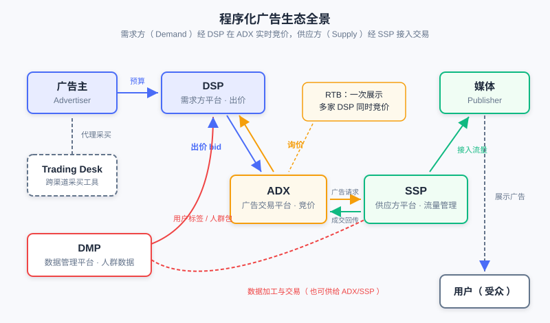
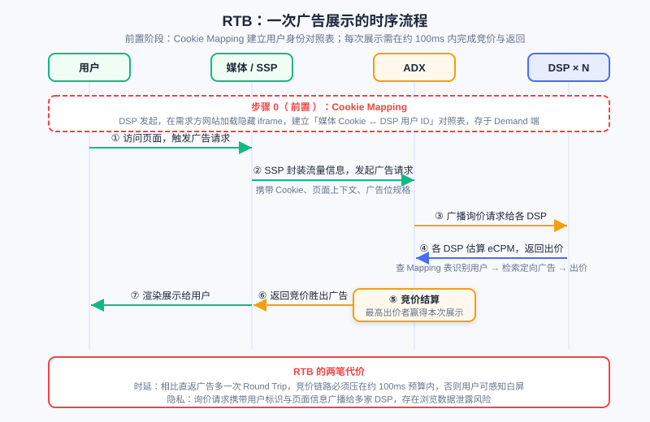

计算广告全景与生态
📝 Before You Continue: 建议先读 1.1「推荐系统是什么」——本章将从推荐系统工程师的视角切入广告，你熟悉的召回、排序、CTR 模型在广告场景都有对应物，但多了一层推荐系统没有的经济学约束。
你已经知道推荐系统如何从海量物品中为用户挑选最合适的内容：召回缩小候选集、排序预估偏好、重排平衡体验。现在换一个问题——如果「被推荐的物品」不再是平台自己的商品，而是广告主付费投放的广告，系统会发生什么变化？
答案远不止「把物品换成广告」这么直接。广告引入了第三个利益方（广告主），带来了 竞价 这一推荐系统不存在的机制；广告的交易方式经历了从线下直签到毫秒级实时竞价的完整演进；广告的定向技术与推荐系统的召回技术同源却又不完全相同。本章带你俯瞰 计算广告（Computational Advertising） 的全景：它是什么、它的根本问题、它的生态如何运转、它的技术如何一步步走向程序化交易。这些内容是后续章节（CTR 预估、竞价机制、机制设计）的地图。
读完本章，你将能够：
- 说出广告定义的三要素与广告有效性模型的六个阶段，并区分品牌广告与效果广告
- 陈述计算广告的根本问题（ 三元匹配最大化 ROI），并解释它与推荐系统的三点本质差异
- 说出广告系统价值公式的四个因子，以及投放模式 1.0 → 3.0 演进中每一代解决了什么问题
- 描述程序化生态中 ADX / DSP / SSP / DMP / Trading Desk 各自的职责与 RTB 的两阶段流程
- 举例说明定向技术的三个阶段与广告形态演进的主线，并解释信息流广告为何是平衡效果与体验的正面典型
- 完成 5 道分层练习题，检验对广告生态全景的理解
12.1.0 广告是什么：定义、分类与有效性模型
我们从定义出发。广告是由 已确定的出资人（Sponsor） 通过各种 媒介（媒体，Publisher） ，面向 受众（Audience） 进行的、有关产品（商品、服务和观点）的，通常是有偿的、有组织的、综合的、劝服性的 非人员 信息传播活动。
这个略显绕口的定义里有三个要素值得你逐个咀嚼。出资人 意味着广告有明确的付费方，这与推荐系统里「平台自己决定推什么」截然不同——广告主是一个有独立利益的博弈方。媒介 是广告的载体，从传统媒体到互联网产品，媒介掌握着用户的注意力。受众 是信息触达的对象，也是推荐系统一直在建模的用户。而定义中「非人员」三个字藏着一个关键点：广告的 本质是完成较低成本的用户接触——不依赖面对面的人员推销，用可复制、可规模化的媒介把产品信息送达潜在消费者，这正是广告相对于人员销售的成本优势。
品牌广告 vs 效果广告
按投放诉求，广告分为两大类。品牌广告（Brand Awareness） 注重长期影响，目标是让受众记住品牌、建立认知，典型如汽车、快消品的大型投放； 效果广告（Direct Response） 以短期转化行为为诉求，追求用户点击、注册、下单等可度量的即时效果。这两类的度量方式完全不同——品牌广告看曝光与认知度，效果广告看点击率与转化率。你会看到，后续章节讨论的竞价、CTR 预估等计算技术主要围绕效果广告展开，但品牌广告的「展示也是一种用户接触」的价值不应被低估。
广告有效性模型：从曝光到决策
一条广告要产生效果，需要穿越一条漏斗。广告有效性模型 把这一过程分为六个阶段，并归入三个大组：
- 选择阶段（被看见） ： 曝光（Exposure）——广告位所在的页面天然决定； 关注（Attention）——广告要不干扰用户的正常行为、给出推荐原因、符合用户兴趣或需求，用户才会注意到它。
- 解释阶段（被理解） ： 理解（Comprehension）——广告内容要落在用户能理解的兴趣范围内，理解门槛不能太高； 接受（Acceptance）——用户对广告和广告位的认可度，决定了信息是否被接纳为态度。
- 态度阶段（被记住并行动） ： 保持（Retention）——广告的艺术性带来记忆效果； 决策（Decision）——最终购买行为落在价格敏感的可接受范围内。
这个漏斗对你应该很眼熟——它就是推荐系统里「曝光 → 点击 → 转化」漏斗的精细化版本。但注意一个差别：推荐系统漏斗里用户「点击」就基本完成了系统目标，而广告漏斗的最底层是「购买」，广告主真正付费购买的是贯穿整条漏斗的用户接触。
🧠 Mental Model: 广告是「花钱买的推荐位」
把信息流里的一条广告看作「平台花钱都买不来的推荐位被广告主买走了」。系统面临的任务仍是匹配（什么广告适合这个用户），但匹配的物品池是付费进入的，且每次展示都直接产生真金白银的收入。理解了这一点，你就能理解为什么广告系统的每个技术决策都比推荐系统多一层「钱」的约束。
Analysis: 在线广告的渠道谱系——硬广、SEM（搜索引擎营销）、导航、直通车、返利网——转化率逐级升高，但位于谱系前端的硬广能吸引更多潜在客户、抬高后续渠道的转化率。不能因为硬广点击率低就放弃它：展示本身就是一种有价值的用户接触。这提醒我们，评估广告渠道不能只看单点转化率，要看整条转化链路的协同。
12.1.1 计算广告的根本问题：三元匹配与 ROI
推荐系统的核心是「用户 × 物品」的匹配；计算广告把这个匹配扩展成三元。在线广告中的计算问题，是关于 （用户）、（上下文）与 （广告）三者的匹配，以最大化 ROI（Return on Investment，投资回报率）为目标的优化问题 ：
其中 是推荐系统里相对次要的一维（场景），在广告里却举足轻重——同一个用户在搜索页看到「跑鞋」广告和在新闻页看到的最佳广告完全不同，上下文本身就携带强烈的意图信号。而 ROI 的拆解方式直接决定了市场结构：把投入看做固定、优化回报，回报包括 点击率 与 点击价值 （二者乘积即 eCPM ，千次展示期望收益）。于是按「谁来动态决定哪一项」，市场分成三类：
- CPM 市场 （按展示付费）：eCPM 固定，点击率与点击价值的决策（与风险）全部交给广告主；
- CPC 市场 （按点击付费）：点击价值由广告主判断（出价），点击率动态预估（平台更了解流量质量，如 Google）；
- CPA/CPS 市场 （按行为/销售付费）：两者均动态，相当于平台做全部决策，风险归于平台——淘宝广告平台以此为基础，因为其广告主（卖家）的服务流程大致相同。
与推荐系统的三点本质差异
作为推荐系统背景的读者，你需要特别留意广告与推荐的三点差异：
- 同质 vs 非同质匹配 ：推荐是同质匹配——候选物品都在同一个「内容池」里竞争，系统用统一的标准打分；广告可以非同质——不同广告主的投放目标（品牌曝光、点击、转化）与出价不同，匹配时要同时考虑「内容适配」与「商业回报」，不能用单一相关度分数一刀切。
- 终点 vs 下游 ：推荐可以做 Downstream 优化——用户点击了物品，后续还有停留、加购、复购等持续优化的空间；广告是终点，一次转化完成后这次投放的使命即告结束，优化目标收敛在本次展示上。
- 兴趣多样性 vs 回报率 ：推荐要满足用户多样的兴趣，探索与多样性本身就是价值；广告追求回报率，同时必须守住安全与质量的底线——一条高回报但低俗的广告对媒介是长期伤害。
💡 Key Insight: 推荐系统优化的是「用户满意度」这一相对单一的目标（体验即价值）；广告系统要在用户、广告主、媒介（平台）三方利益之间找平衡。你之后学到的所有广告机制设计（竞价、计费、分配），本质上都是在回答「三方利益如何均衡」这个问题。
广告系统价值公式
从系统视角，互联网广告系统发展的终极目标是价值最大化，可以把广告系统的价值分解为四个因子的乘积：
这四个因子是理解整个广告技术演进的总纲： 转化效率 靠广告形式与定向技术提升（12.1.4、12.1.5）； 计价机制 靠竞价模式让价格市场化地逼近价值（12.2、12.3 展开）； 资源量 取决于用户基数与使用时长，但盲目加广告位是饮鸩止渴——必须平衡用户价值与广告利益； 投放效率 靠交易链路的程序化演进（12.1.2、12.1.3）。本章后续内容就是这个公式四个因子的逐个展开。
还有几个常见误区值得提前澄清：「越精准的广告给市场带来的价值越大」不一定成立；媒体利益与广告主利益是相关博弈的关系，并非零和也并非一致；「精准投放 + 大数据可以显著提高营收」同样不一定——覆盖率过低的数据来源并非不需要，人群覆盖与精准度之间存在权衡。
12.1.2 投放模式演进：从直签到程序化交易
有了价值公式做总纲，我们先看「投放效率」因子的演进。广告主与媒介如何达成交易？三代投放模式给出了答案。
1.0：广告主 ↔ 媒体直签
最原始的模式是广告主直接与媒体签订广告合约。对一个要在多个媒体投放的广告主，这意味着要与每家媒体分别谈判、签约、对账——效率非常低下。市场自发演化出广告分销商、广告代理等中间商来改善交易的低效，但整体上仍是低效的广告交易模式：交易粒度粗（按天、按位置卖）、信息不透明、议价成本高。
2.0：广告网络（Ad Network）
广告网络（Ad Network） 的出现开始整合供需双方的需求：它聚合多家媒体的剩余流量，为广告主提供更丰富的供应方资源，同时提供人群标签帮助广告主制定定向规则。广告网络有两个关键特征：一是 卖人群不卖广告位——它淡化广告位的概念，把不同媒体的流量按受众标签打包售卖；二是在计价上， CPC（按点击付费）是最合适的计价方式——网络层面的流量质量参差不齐，按点击计价把「曝光是否有效」的判断留给了系统，广告主只为点击买单。
但广告网络是一个 封闭系统 ，其整合能力仍然有限：一方面，媒体为了避免劣质广告伤害网站用户体验，并不倾向于把优质资源接入广告网络；另一方面，供应方巨头会自建广告网络整合旗下分散的供应方资源（如腾讯的广点通）。广告主也需要向广告网络「清晰描述」自己的投放需求，定制化用户划分不被支持——这正是下一代模式要解决的问题。
3.0：程序化交易（DSP-ADX-SSP-DMP）
第三代模式把供需双方的整合推向全网。广告主通过 DSP（Demand-Side Platform，需求方平台） 接触全网供应方资源，交易经 ADX（Ad Exchange，广告交易平台） 以实时竞价方式完成，媒体端由 SSP（Supply-Side Platform，供应方平台） 管理流量。在这一模式下，DSP 甚至能够帮助广告主制定最合适的定向规则，并完成 最低粒度（单次展示） 的自动交易——投放从「买断一个位置一个月」精细化到「为这一次展示出一次价」。

图中展示了 3.0 模式的完整生态：需求侧（广告主 / Trading Desk / DSP）、交易中枢（ADX）、供给侧（SSP / 媒体）与数据侧（DMP）各就各位。值得注意的是 DMP 的角色——它把数据也变成了可交易的资产，为 DSP 的精准出价供给弹药。
Analysis: 三代模式的演进逻辑一以贯之：交易粒度越来越细（月 → 天 → 展示）、参与方越来越专业（媒介 → 广告网络 → DSP/ADX/SSP 分工）、数据流动越来越开放（封闭网络 → 全网竞价）。但每一代都在解决上一代的问题时引入新的代价——3.0 的代价是时延与隐私（12.1.3 详述）。
12.1.3 程序化生态与 RTB：一次展示的旅程
现在我们深入 3.0 生态内部，看每个角色的职责，以及一次实时竞价如何在约 100 毫秒内完成。
生态角色分工
- ADX（Ad Exchange，广告交易平台） ：交易中枢，用 实时竞价（Real-Time Bidding, RTB） 方式连接广告与（上下文、用户），按照 展示 粒度上的竞价向广告主收取费用。代表：RightMedia、AdECN、Google AdX、OpenX。
- DSP（Demand-Side Platform，需求方平台） ：交易市场需求方技术，提供定制化用户划分、跨媒体流量采购、通过 ROI 估计支持 RTB 出价。DSP 还需解决两个核心算法问题： 竞价行情预估（Bid Landscape Prediction）——预测流量以决定采买策略，因为 DSP 拿到的流量是其出价的函数； 点击价值估计——训练数据稀疏且与广告主类型强相关，原则是用较大的偏差换较小的方差、充分利用广告商类型的层级结构。代表：InviteMedia（功能型）、MediaMath（优化型）。
- SSP（Supply-Side Platform，供应方平台） ：提供媒体端的用户划分和售卖能力，可灵活接入多种变现方式，核心功能是 收益管理（Yield Optimizer）——统一优化 Premium Sales、Network 和 RTB 流量，以优化媒体利益为目标，主要在广告位和时间维度上做 eCPM 估计与流量分配。代表：AdMeld、Rubicon、Pubmatic。
- DMP（Data Management Platform，数据管理平台） ：为网站提供数据加工和对外交易能力，加工跨媒体用户标签在交易市场售卖；其关键特征是 定制化用户划分 + 统一的外部数据接口。代表：BlueKai、AudienceScience。
- Trading Desk（广告购买平台） ：面向需求方的工具，允许广告商跨 Ad Network 购买广告，关键特征是连接不同媒体和广告网络（Universal Marketplace）与非 RTB Campaign 的 ROI 优化能力，经常由代理公司孵化。典型如 EfficientFrontier（组合优化，被 Adobe 收购）。
RTB 的两阶段流程
RTB 的运转分两个阶段。第一阶段是 Cookie Mapping（用户身份匹配） ：由 DSP 发起，在需求方网站选择性加载 iframe，建立「媒体 Cookie ↔ DSP 用户 ID」的对照表，Mapping 表存在 Demand 端。这是竞价的前提——ADX 广播询价时携带的是媒体侧 Cookie，DSP 只有查 Mapping 表才能识别出「这是我的哪个用户」。第二阶段是 Ad Call（广告请求与竞价） ：用户访问媒体触发广告请求，ADX 向各 DSP 广播询价请求，DSP 估算后返回出价，最高者赢得这次展示。

如图，从用户访问页面到广告渲染，中间要经过 SSP 封装请求、ADX 广播询价、多家 DSP 并行出价、竞价结算、返回广告共七步。这条链路存在两笔不可忽视的代价： 时延——相比直返广告多了一次 Round Trip，竞价链路必须压在约 100ms 预算内，否则用户可感知白屏； 隐私——询价请求携带用户标识与页面信息广播给多家 DSP，存在浏览数据泄露风险。此外，DSP 数量较多时，ADX 侧的服务与带宽成本也是工程上必须优化的问题。
Analysis: RTB 用「每次展示单独竞价」换取了极致的交易粒度，代价是每次展示都要付出一次全链路通信成本。这解释了为什么程序化生态后来演化出优选（Preferred Deal）等非完全竞价的交易方式——不是所有流量都值得付出 RTB 的通信成本。
交易方式谱系
程序化时代的流量交易并非只有 RTB 一种，而是一个从「最粗」到「最细」的谱系：
| 交易方式 | 交易形态 | 特点 |
|---|---|---|
| Premium Sale（优先销售） | 担保投送（Guaranteed Delivery，经 Ad Server） | 合约约定展示量，未完成需补偿；CPT 结算；量优先于质 |
| Preferred Deal（优选） | 一对一议价 | 广告主按约定价格优先挑选流量，无需公开竞价 |
| 网络优化（Network Optimization） | 接入 Ad Network | 媒体把流量交给网络整体变现，组合优化 |
| RTB（实时竞价） | ADX 开放竞价 | 单次展示粒度，多家 DSP 同时出价，价高者得 |
从上到下，交易粒度越来越细、确定性越来越低、价格发现越来越充分。担保式投送 基于合约——约定展示量未完成需要补偿，采用 CPM 结算，投送由服务端决策，其算法基础是点击率预测和流量预测下的 在线分配（Online Allocation） 问题； RTB 则把定价完全交给市场。SSP 的收益管理器所做的，正是在这几种方式间为每次流量选择变现价值最高的通道。
12.1.4 定向技术三阶段：从规则到系统
回到价值公式的「转化效率」因子。定向（Targeting） 的专业叫法就是「受众与广告的匹配度」，核心目标是从广大受众中找到广告的目标受众。定向技术的发展大致分为三个阶段。
第一阶段：规则定向
广告主基于时间、地理位置、频道等产品属性设定规则进行「定向」（严格说这只是筛选）。这是 CPT 与展示量广告时代的标配：广告主圈定「早高峰 + 一线城市 + 体育频道」，系统按规则匹配流量。它的颗粒度取决于媒介的产品化程度，与用户个体几乎无关。
第二阶段：数据定向
广告主基于用户个人属性、行为记录等 用户数据 制定定向规则，包括： 人口属性定向 （年龄、性别）、上下文定向 （根据页面内容判断场景，其工程实现是 Near-line 上下文系统——在线 Cache 存储 URL→特征表，未命中则触发爬虫与特征提取）、行为定向 （基于用户行为日志）、搜索关键词定向。数据定向的颗粒度从「产品位」细化到了「用户个体」，是广告网络「卖人群」的技术前提。
行为定向背后有一张行为强度谱系：按信息强度排序的重要原始行为包括——成交（Transaction）、预成交（Pre-transaction，如浏览）、付费搜索点击、广告点击、搜索点击、分享、页面浏览、广告浏览。两个规律值得记住： 越靠近 demand（需求成交）的行为对转化越有贡献；越主动的行为越有效。用户主动搜索远比被动浏览广告携带更强的意图信号。
第三阶段：系统定向
广告主不再定义明确规则，由 系统 分析广告主已有的目标受众，再从供应方的用户中找到合适的受众。这是定向从「人定规则」到「机器学习」的跃迁，也是与推荐系统技术交汇最深的地带：
- 重定向（Retargeting） ：广告主提供受众信息（如通过在广告主网站植入 Cookie 收集到的访客），系统从供应方流量中找回这些「老顾客」。决定重定向效果的核心因素，是广告主提供的受众与供应方受众的 重合度——但随着开放式广告系统成熟，广告主通过 DSP 几乎可以从全网找回这些人。重定向还有两个重要延伸：
- 个性化重定向（Personalized Retargeting） ：重定向的纵向延伸——找回老用户后，针对这个用户推送 商品粒度 的个性化广告：推荐他购物车里的商品、去掉已购买的东西、或推荐相关新品。对广告主而言，这相当于一个 站外推荐引擎（Offsite Recommendation）——把站内推荐橱窗放到媒体的广告位里去。你会发现这就是推荐系统的排序技术在广告场景的直接复用。
- 搜索重定向（Search Retargeting） ：重定向的横向延伸——分析广告主从搜索引擎来源的流量数据，将搜索过特定关键词的用户定向到广告主网站。严格说它更接近新客推荐而非重定向。
- 新客推荐（Look-alike） ：广告主提供 种子用户 （seed audience），DSP 通过行为相似性在供应方受众中找到与种子相似的潜在新用户。它可视为扩展的重定向与广告商自定义标签。两个实践要点：在同样的触达（reach）水平下，Look-alike 的效果好于通用标签定向；应尽量利用非 Demand 端数据，避免在竞争对手之间「盗卖」用户。Look-alike 的固有问题在于「类似」是黑盒概念，难以清晰定义和量化。
有价值的数据来源
系统定向的效果取决于数据质量。五类有价值的数据来源，按用途分别是：
- 用户标识 ：除上下文和地域外各种定向的基础，需要长期积累；可通过多家第三方 ID 绑定优化；
- 用户行为 ：业界公认的有效行为数据，使用时需去除网络热点话题带来的偏差；
- 广告商数据 ：广告主网站的 Cookie 植入可用于 Retargeting，对接广告商的种子人群可做 Look-alike；
- 用户属性与精确地理位置 ：非媒体广告网络很难自行获取，需第三方数据对接；
- 社交网络 ：朋友关系为用户兴趣和属性的平滑提供了机会——朋友的兴趣是预测用户兴趣的优质信号。
Analysis: 定向三阶段的演进与推荐系统的技术演进高度同构：规则定向对应早期的运营规则推荐，数据定向对应标签体系与内容理解，系统定向（个性化重定向、Look-alike）则直接就是召回 + 排序的机器学习问题。差异在于：广告定向多了「广告商数据」这一外部信号源，且 Look-alike 面临的正样本稀疏问题比推荐系统更极端。
12.1.5 广告形态演进：从卖位置到卖注意力
「转化效率」因子的另一半是 广告形式。广告形态的演进同样是一条清晰的主线，下表整理了完整的演进谱系（依据源材料的对比表）：
| 形态 | 受众端形式 | 定向方式 | 收费方式 | 提升之处 |
|---|---|---|---|---|
| CPT 广告 | 不限 | 简单定向：时段、地理 | CPT 按展示时间收费 | — |
| 展示量广告 | 不限 | 简单定向：时段、地理 | CPM 按曝光量收费 | 按曝光量收费，广告开始向「面向效果」方向进化 |
| 搜索广告 | 搜索结果页：结果列表 / 页面其他位置 | 中级定向：关键词 | 竞价单价 × 点击量 | 关键词提供更好的定向方式 |
| 社交网络广告 | 不限 | 简单定向：时段、地理 | 不限 | 用户在社交网络停留时间更久，适合持续曝光 |
| 精准定向广告 | 不限 | 高级定向：用户信息、频道定向 | 竞价单价 × 点击量 | 从「数量」到「质量」 |
| 上下文广告 | 不限 | 高级定向：页面内容、行为信息、用户信息 | 竞价单价 × 点击量 | 不再依赖单一关键词，分析页面内容提供更多定向信息 |
| 信息流广告 | 通常在阅读信息流中，和用户消费内容相似 | 高级定向 | 竞价单价 × 点击量 | 开始尝试将内容和广告融合：增强广告曝光，同时降低广告对用户体验的伤害 |
| 一般竞价广告 | 不限 | 高级定向 | 竞价单价 × 点击量 | 能使用多种信息进行复杂定向，整合多种媒体多种广告形式 |
| 植入式原生广告 | 融入产品内容 / 服务 | 高级定向 | 竞价单价 × 点击 | 广告和内容更加深度融合 |
| 程序化交易广告 | 不限 | 高级定向 | 实时竞价单价 × 点击 | 实时竞价，进一步提高广告效果转化效率 |

如图，这条阶梯由两股力量共同推动： 形式演进 （内容与广告融合，信息流与原生降低对体验的伤害）和 机制演进 （从卖位置到卖人群，CPT/CPM 到 RTB 实时竞价）。两条线在顶端的「程序化交易 + 原生化」处汇合。
信息流广告：平衡效果与体验的正面典型
在这条演进线中， 信息流广告（Feed Ads / Native Ads） 值得单独强调。好的广告形式能够平衡广告效果和用户体验，信息流广告是一个正面典型。它的形态与用户消费的内容高度相似、混排在阅读信息流中，得益于技术进步才成为可能。它「平衡」的逻辑体现在两端：对广告主，信息流原生形态提升了关注与接受（对应有效性模型的选择与解释阶段），曝光不被用户主动屏蔽；对用户，广告不打断阅读节奏、不造成突兀的体验损伤。这正呼应了价值公式中「资源量」因子的告诫——广告资源总量与用户使用情况成正比，只有保护用户体验，使用时长这个分母才能持续增长。
💡 Key Insight: 广告形态演进的本质是「广告离内容越来越近，交易离展示越来越近」。前者解决的是用户接受度问题（有效性漏斗的前半段），后者解决的是定价精度问题（价值公式中的计价机制因子）。信息流广告恰好站在两条线的交点上——它既是形式融合的产物，又是精准定向与程序化竞价的主要载体。
Analysis: 广告形式相对成熟（条幅、视频、文字链），通常不是广告系统需要考虑的问题——决定广告效果的第一要素是广告创意的设计。但「科学化营销」的思路正在改变这一点：广告系统开始尝试辅助广告主优化营销策略。对算法工程师而言，更可靠的发力点仍是定向技术（受众与广告匹配）与计价机制，即本章 12.1.4 与后续 12.2/12.3 的内容。
⚠️ Common Mistakes in 12.1
| # | Mistake | Example | Why It's Wrong | Fix |
|---|---|---|---|---|
| 1 | 把广告当作「带价格的推荐」 | 「广告排序就是 CTR 排序加个出价」 | 广告存在三方利益（用户/广告主/媒介）博弈，出价使匹配非同质 | 用 eCPM 视角统一点击率与点击价值，兼顾三方均衡 |
| 2 | 认为「越精准价值越大」「精准+大数据必然增收」 | 盲目追求人群覆盖极窄的定向 | 人群覆盖过低的数据来源同样有价值，覆盖与精准存在权衡 | 评估定向价值时同时看 reach 与质量 |
| 3 | 混淆广告网络与 ADX | 「Ad Network 就是小型 Ad Exchange」 | 广告网络是封闭系统、卖人群、CPC 计价；ADX 是开放实时竞价、按展示竞价 | 记住 2.0 封闭网络 vs 3.0 开放交易的边界 |
| 4 | 忽略 Cookie Mapping 的前置地位 | 「DSP 收到询价就能识别用户」 | ADX 询价携带媒体 Cookie，DSP 必须先查 Mapping 表映射到自己的用户 ID | 把 Cookie Mapping 理解为 RTB 的第 0 步 |
| 5 | 以为 RTB 只有多出价方竞价这一步 | 「RTB 就是 ADX 收出价取最高」 | RTB 含 Cookie Mapping 与 Ad Call 两个阶段，且有时延（约 100ms 预算）与隐私两笔代价 | 用七步时序图理解完整链路 |
| 6 | 把个性化重定向等同于「找回老客」 | 「重定向就是给访问过的人再推广告」 | 个性化重定向要推商品粒度广告、剔除已购、推荐相关新品，本质是站外推荐引擎 | 把它看作推荐系统排序技术在广告位上的复用 |
本章小结
📌 Key Takeaways
| Concept | Key Points | Why It Matters |
|---|---|---|
| 广告定义 | 出资人 / 媒介 / 受众三要素，本质是低成本用户接触 | 「非人员」传播的成本优势是广告商业模式的根基 |
| 有效性模型 | 曝光→关注→理解→接受→保持→决策，三阶段分组 | 广告效果评估与形式设计的框架，对应推荐漏斗但更细 |
| 根本问题 | 匹配最大化 ROI | 上下文是一等公民，且匹配因出价而非同质 |
| 与推荐的差异 | 同质 vs 非同质、终点 vs 下游、兴趣多样性 vs 回报率 | 推荐背景工程师迁移到广告的认知锚点 |
| 价值公式 | 转化效率 × 计价机制 × 资源量 × 投放效率 | 理解广告技术演进的总纲 |
| 投放模式 1.0–3.0 | 直签 → 广告网络（卖人群、CPC）→ 程序化交易（DSP-ADX-SSP-DMP） | 每代解决上代问题的同时引入新代价（封闭性/时延/隐私） |
| RTB | Cookie Mapping + Ad Call 两阶段，七步时序，约 100ms 预算 | 程序化交易的核心机制与工程约束 |
| 交易方式谱系 | Premium Sale（担保投送）→ 优选 → 网络优化 → RTB | 不同流量匹配不同交易粒度，SSP 收益管理做路由 |
| 定向三阶段 | 规则定向 → 数据定向 → 系统定向（重定向/Look-alike） | 个性化重定向 = 站外推荐引擎，与推荐技术直接同源 |
| 信息流广告 | 内容与广告融合，平衡效果与用户体验的正面典型 | 形式演进与机制演进的交汇点 |
❓ FAQ
Q1: CPC 和 CPA 市场分别由谁承担点击率预估的风险？
A: CPC 市场中点击价值由广告主以出价形式申报，点击率由平台动态预估，风险主要在平台预估能力；CPA/CPS 市场中点击率与点击价值均动态、决策全在平台，转化风险完全归于平台——因此只有广告主转化流程高度一致的市场（如淘宝）才适合以 CPA/CPS 为基础。
Q2: 为什么广告网络不易支持定制化用户划分，而 DSP 可以？
A: 广告网络是封闭系统，广告主只能使用网络预置的标签「清晰描述」需求；DSP 拥有定制化用户划分能力，可对接广告商数据（种子人群、Cookie 植入），在全网流量上按广告主自己的受众定义出价——这正是从 2.0 走向 3.0 的核心驱动力。
Q3: 搜索重定向和个性化重定向、新客推荐分别是什么关系？
A: 个性化重定向是重定向的纵向延伸，面向已触达用户做商品粒度的个性化推送（站外推荐引擎）；搜索重定向是横向延伸，把搜索过相关关键词的用户引到广告主网站，严格说它面向的是未触达用户，性质更接近新客推荐。
🔗 前后关联
- 12.2 （点击率预估）将展开本章反复出现的「点击率动态预估」——广告排序需要准确的 CTR 绝对值而不仅是相对排序，这正是回归任务的价值。
- 12.3 （竞价与机制设计）承接交易方式谱系：GSP/VCG 定价、位置拍卖与 eCPM 排序的机制细节。
- 2.x （召回）的 ItemCF / 向量召回与本章定向技术同构：重定向与 Look-alike 本质是「以人群为 query 的召回」。
- 3.x （排序模型）的 CTR 模型（如 DeepFM、DIN）直接服务于广告的 eCPM 排序，工业实践可参考延伸阅读中的阿里妈妈 DIN / DIEN 与美团搜索广告排序。
- 8.3 （端到端生成式广告）展示了竞价机制与生成模型统一的前沿形态，可视为本章程序化生态在模型层的前瞻。
Practice Problems
Work through all problems in order — they get progressively harder. Each has a complete solution you can reveal after trying it yourself.
Problem 12.1.1 — 广告定义与分类 🟢 Easy
判断下列 4 条陈述的对错，并各用一句话说明理由：(a) 广告定义中的「非人员」意味着广告不需要出资人；(b) 品牌广告的典型度量是短期转化率；(c) 有效性模型中「关注」属于选择阶段；(d) 硬广点击率低所以应该被放弃。
💡 Solution (click to reveal)
Approach: 逐条对照 12.1.0 的定义与模型。
- (a) 错。广告三要素是出资人、媒介、受众；「非人员」强调不依赖面对面人员推销、完成低成本用户接触，出资人仍是必需要素。
- (b) 错。品牌广告（Brand Awareness）注重长期影响与认知建立；短期转化行为诉求是效果广告（Direct Response）的特征。
- (c) 对。选择阶段包含曝光与关注（被看见），解释阶段包含理解与接受，态度阶段包含保持与决策。
- (d) 错。在线广告渠道中硬广一端虽转化率低，但能吸引更多潜在客户、抬高后续渠道（SEM、直通车等）的转化率——展示本身就是一种有价值的用户接触。
Key points:
- 三要素缺一不可，「非人员」是成本优势的来源。
- 漏斗评估要看整条链路协同，不能只看单点指标。
Problem 12.1.2 — CPM/CPC/CPA 的风险分配 🟢 Easy
某广告平台正决定采用哪种计价市场。广告主希望「只为最终销售付费」，平台对自己的 CTR 预估能力有信心、但对不同广告主的转化流程差异没有把握。请回答：(a) CPA/CPS 市场中点击率与点击价值的决策分别由谁承担？(b) 为什么淘宝广告平台可以采取 CPA/CPS 作为基础？(c) 本例中平台更应选择哪种市场？
💡 Solution (click to reveal)
Approach: 用「谁动态决定哪一项」分析风险归属。
- (a) CPA/CPS 市场中点击率与点击价值均动态，相当于平台做全部决策，风险归于平台。
- (b) 淘宝的广告主（卖家）服务流程大致相同，平台对不同广告主的转化链路有一致的把握，风险可控。
- (c) 平台对 CTR 预估有信心但对广告主转化差异没有把握，而 CPC 市场恰是「点击价值由广告主判断（出价）、点击率由平台动态预估」——各自动态决定自己最了解的一项，故选 CPC。
Key points:
- CPM：决策与风险全在广告主；CPC：各管一半；CPA/CPS：决策与风险全在平台。
- 计价机制的选择本质是风险与信息优势的匹配。
Problem 12.1.3 — RTB 链路与时延代价 🟡 Medium
请按发生顺序排列 RTB 一次展示的 7 个步骤（用编号 ①–⑦）：① DSP 估算 eCPM 并出价；② 用户访问媒体页面触发广告请求；③ ADX 向各 DSP 广播询价；④ SSP 封装流量信息发起广告请求；⑤ 竞价结算，最高出价者赢得展示；⑥ 返回竞价胜出的广告；⑦ 广告渲染展示给用户。并回答：为什么说 RTB 存在「两笔代价」？
💡 Solution (click to reveal)
Approach: 对照 RTB 时序图（Ad Call 阶段）。
正确顺序：② → ④ → ③ → ① → ⑤ → ⑥ → ⑦。
两笔代价：
- 时延 ：相比直返广告，RTB 多一次 Round Trip（ADX 与 DSP 间的询价/出价往返），整个链路必须压在约 100ms 预算内，否则用户可感知白屏。
- 隐私 ：询价请求携带用户标识与页面信息广播给多家 DSP，存在浏览数据泄露风险。
此外别忘了前置条件：这一切都建立在 Cookie Mapping（DSP 发起、在需求方网站加载 iframe、Mapping 表存于 Demand 端）之上，没有身份对照，DSP 收到询价也无法识别用户。
Key points:
- Cookie Mapping 是第 0 步，Ad Call 才是每次展示的竞价流程。
- 交易粒度（单次展示）与通信成本是 RTB 的内在权衡。
Problem 12.1.4 — 定向方案选择 🔴 Hard
某跨境电商找到你做投放顾问，它的三种诉求与可选定向技术如下，请为每个诉求选择最合适的技术并说明理由：(a) 「上个月加购物车但没下单的用户，我想分别推购物车里的商品和同类新品」；(b) 「我们有一批 5 万高价值老客的名单，想找更多像他们的人」；(c) 「预算有限，只想投给最近在搜索引擎搜过『海淘奶粉』的人」。
💡 Solution (click to reveal)
Approach: 按定向对象（已触达用户 / 种子扩展 / 搜索行为）匹配技术。
- (a) 个性化重定向 （重定向的纵向延伸）。对象是广告主站内已触达用户（通过 Cookie 植入识别），推送商品粒度广告：购物车商品催单、已购剔除、同类新品推荐——本质是把站内推荐橱窗放到媒体广告位中（站外推荐引擎）。
- (b) 新客推荐（Look-alike）。以 5 万老客为种子用户，DSP 通过行为相似性在供应方受众中找潜在新用户；同样 reach 水平下效果好于通用标签。注意尽量利用非 Demand 端数据，避免在竞争对手间盗卖用户；同时「类似」是黑盒，效果需实验验证。
- (c) 搜索重定向。分析广告主从搜索引擎来源的流量数据，把搜索过特定关键词的用户定向到广告主网站；严格说它面向未触达用户，性质更接近新客推荐，但以搜索词为信号，意图强度高、预算效率好。
Key points:
- 选择定向技术的第一问：目标受众是「已触达」还是「未触达」？
- 行为强度谱系：越靠近 demand、越主动的行为，对转化贡献越大——搜索点击强于广告点击强于页面浏览。
🏆 Challenge: 为一个新广告产品规划交易方式组合
你负责一款日活千万的资讯 App 的广告变现。产品有首页开屏、信息流混排、文章底部三种广告位，广告主构成是 60% 品牌广告主 + 40% 效果广告主。请写约 180 字，说明你会如何为三种广告位在「Premium Sale（担保投送）/ Preferred Deal / 网络优化 / RTB」谱系上分配交易方式，并说明信息流广告位在形式设计上应注意什么。
💡 Hint
参考分配思路：开屏曝光量大、独占性强，适合品牌广告主做 Premium Sale（担保投送，CPT/CPM 结算，量优先于质，需以流量预测与在线分配保合约量完成）；信息流流量最大但单次价值分散，适合接入 RTB 开放竞价以充分价格发现（同时保留 Preferred Deal 给议价能力强的头部广告主优先挑选优质流量）；文章底部长尾流量单价低，接入 Ad Network 做网络优化即可，省去 RTB 通信成本。信息流形式上应让广告与用户消费的内容形态相似（图文卡片混排）、不打断阅读节奏——信息流广告正是「平衡广告效果与用户体验的正面典型」，用户体验保护的是「使用时长→资源量」这个长期分母。核心逻辑：不同广告位流量特征不同，SSP 收益管理应在谱系上为每次流量选 eCPM 最高的变现通道。